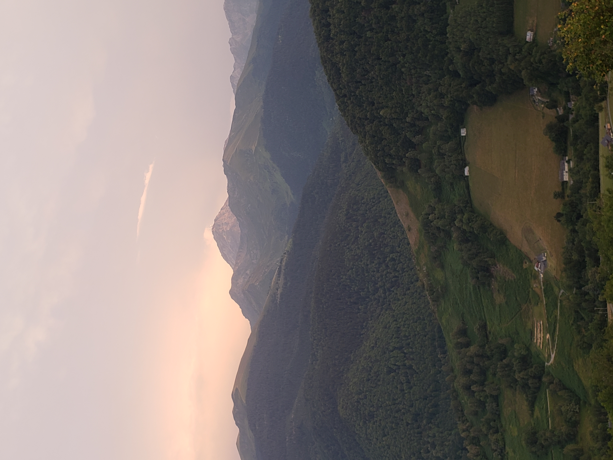

Race-Pace / Vert
In my effort to execute a high-volume race-specific training block, I've focused on building out the gearbox for
ultra-endurance. I dropped my speed workouts for hiking sessions. Hiking efficiently up a steep grade is an essential
tool and harder than it looks. The only way to get an indomitable low-gear stride is to do A LOT of it. Most
athletes in Europe spend their winters ski-mountaineering where it is impossible to run uphill, they practice efficiency
and power getting up-mountain in a hiking stride. Just because you can run uphill does not mean you can withstand
thousands of meters of steady hiking. 
That being said speed remains indispensable. By doing shorter races this year I challenged myself to get fast. Speed boosts fitness, strength and running economy. My aim was to carry this over into ultra-specific training. What happened was a drop in percieved effort at ultra-pace (5-8km/hr) and becasue it felt easier I could handle more.
The best example was the ability to do vert-heavy days back to back to back. By the end of the block I was able to do two day blocks covering 4-5000m of climbing without muscle soreness. Vert-resistant legs are the most important piece of the puzzle for both upcoming races. Although I feel well-prepared in this regard, it remains difficult to gauge how I will do after 6000m of climbing.

Training and Life
Doing 20+ hours of training a week is difficult to manage. The legs remained on-call all month. I often did doubles,
waking up early and going out late. I wedged long days in when possible. The mild torture of dragging out the stale
baguettes at 10pm for a two hour session often turned into a splendid time and the same goes for the 5am wakeup after a
couple hours of sleep. The truth is, training manically is unsustainable, squaring it off to four weeks made it
psychologically digestible.

Last Word
Given what I accomplished this month I think I am well-prepared for the Canfranc-Canfranc 100km, the only session I
missed (no-trivial one) was a 10-12hr day. Just couldn't swing it. The plan is to use the CC race as final prep for the Grand Raid. During this training block I've been pleased to see that the body can adapt to higher volume and discomfort. The best part of the training was likely the copious eating, salted-carmel twix bars, 4-egg breakfast, rare meat and crunchy vegetables. It also meant more solemn discussions with the moon more respiration, perspiration, more life out of doors--the chief raison d'etre for trail running.